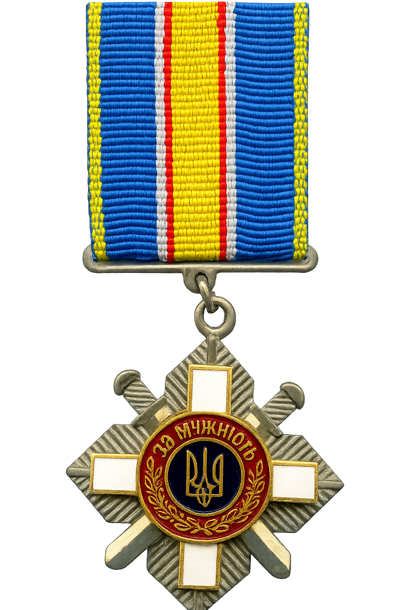

Орден «За мужність» ІІІ ступеня
Указ Президента України
- № указу
- 827/2023
- Дата
За особисту мужність, виявлену у захисті державного суверенітету та територіальної цілісності України, самовіддане виконання військового обов’язку.